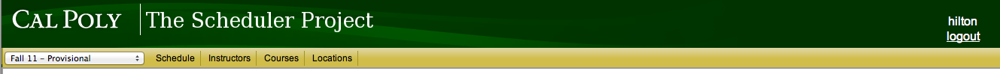
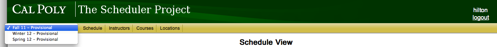

Before an administrator has logged in and chosen which schedule they want to work with, they will be presented with a simple header that is not dynamic, but is mostly just a placeholder.
Figure 2.1.1.1: Title Header
Once the administrator is logged in and has chosen a schedule to work with, they will see the full interface on every page they visit. At any time they can use the links to jump to another section of the application.
The dropdown field shows the current schedule that is selected, and provides an easy way to switch between schedules.
The Schedule Button will take the administrator to the Schedule Setup page where the administrator can view, edit and export a schedule.
The Instructors Button will take the administrator to the Instructor Overview page where the administrator can manage the Instructors data in the system.
The Courses Button will take the administrator to the Course Overview page where the administrator can manage the Courses data in the system.
The Locations Button will take the administrator to the Locatation Overview page where the administrator can manage the Locations data in the system.

Figure 2.1.1.2: Full Header
When the administrator clicks on the current schedule name, they will get a drop down menu with all the current schedules, and they can quickly choose to manage another schedule.

Figure 2.1.1.3: Schedule Chooser Menu
Once an administrator has successfully validated their credentials and logged in, they are greeted with the Home screen. This screen displays a list of all previous schedules, in addition to the ability to create a new schedule or edit the list of instructors, courses, or locations.
Figure 2.1.3.1: The Home screen
The Previous Schedules list displays a list of all schedules saved to the department. The user may view or edit any schedule by selecting it from the list and clicking Open. Doing so opens the schedule in the default list view. From here, the user may print the schedule, edit the schedule, or save a copy of the schedule.
The ability to save a copy supports a wide array of functionality. If a user wishes to use an old schedule as a template for a new one, they may easily load up the old schedule and save a copy to be used as a template for the new quarter. The user may then load the new copy and edit it as appropriate for the quarter in question. This also makes it quick and easy to make backups or multiple versions of an in-progress schedule.
The Home screen also provides the user the ability to create a new, blank schedule. Doing so will present the user with the blank schedule editor. See that slide for additional information on creating a new schedule.
The Add/Remove links at the bottom of the Home screen allow the user to manage instructors, courses, and locations. This functionality allows the user to edit instructors, courses, and rooms before creating a schedule.